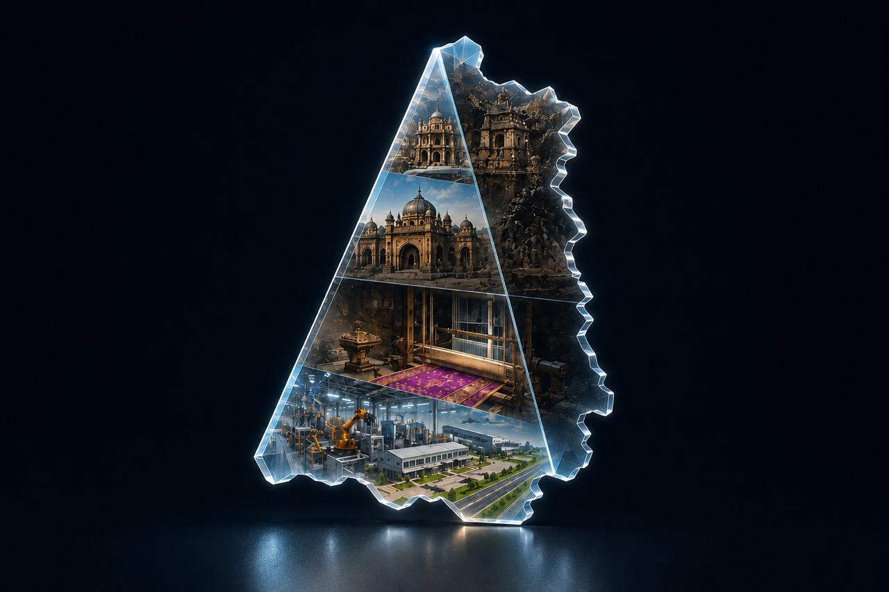

7 Colours | 1 City | Infinity Possibilities

Financed by the Silk Route — capital, commerce & exchange, then and now.
Ellora's caves were centres of learning & craft across generations.
Ajanta's murals reflect centuries of artistic mastery & imagination.
Viharas at Ellora & Ajanta sheltered monks & travellers alike.
Paithani weaving turns raw silk into heirloom art & value.
The Nahar-e-Ambari water system engineered flow, centuries ahead.
Devgiri (Daulatabad), a seat of power for centuries — built to last.